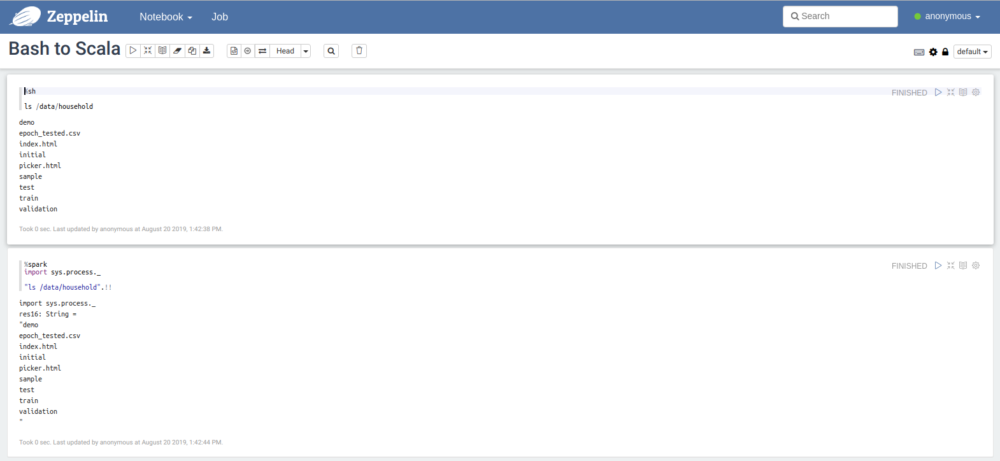
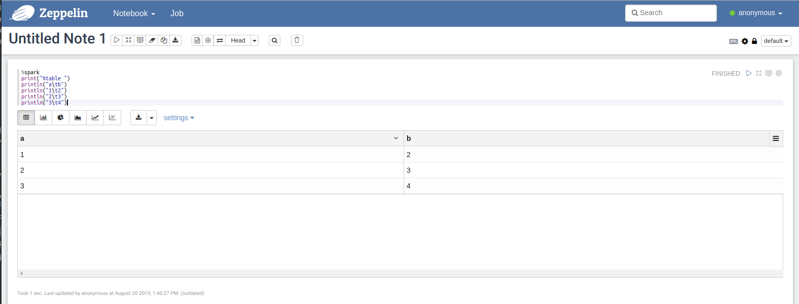
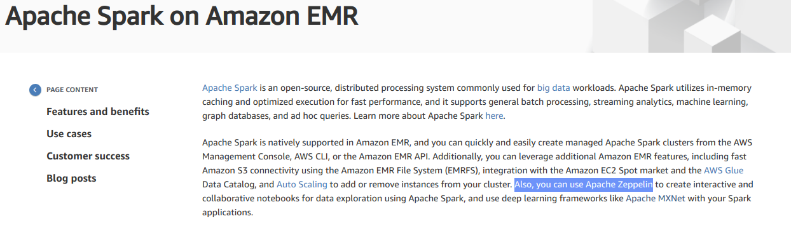
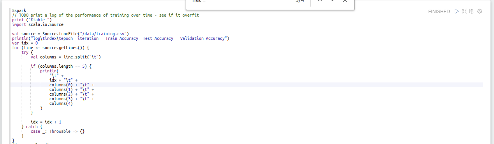
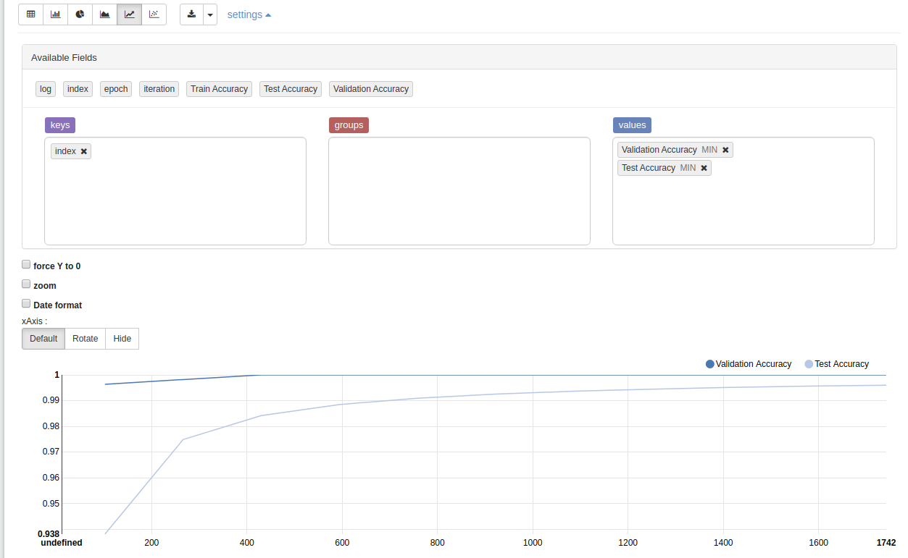
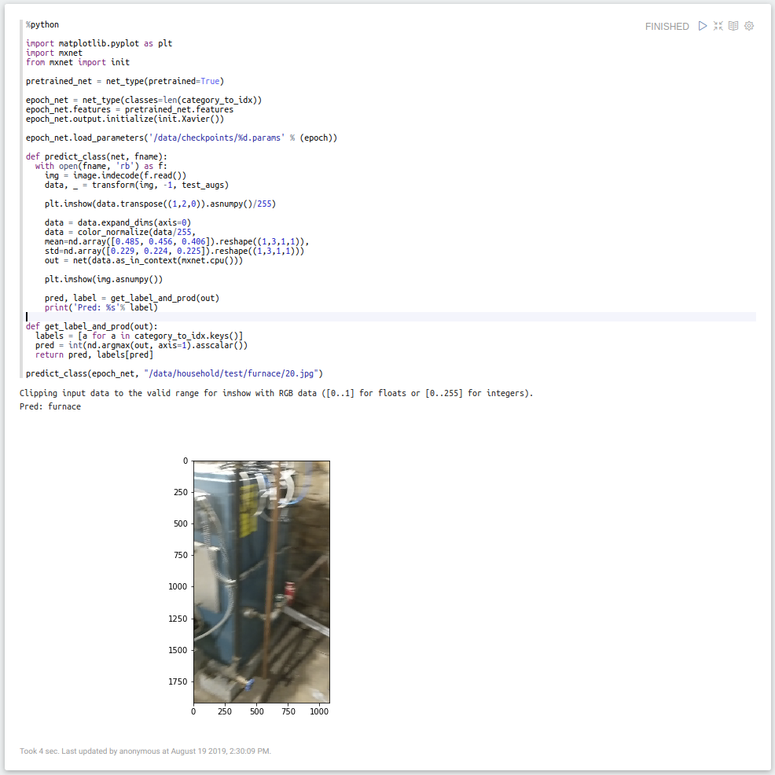
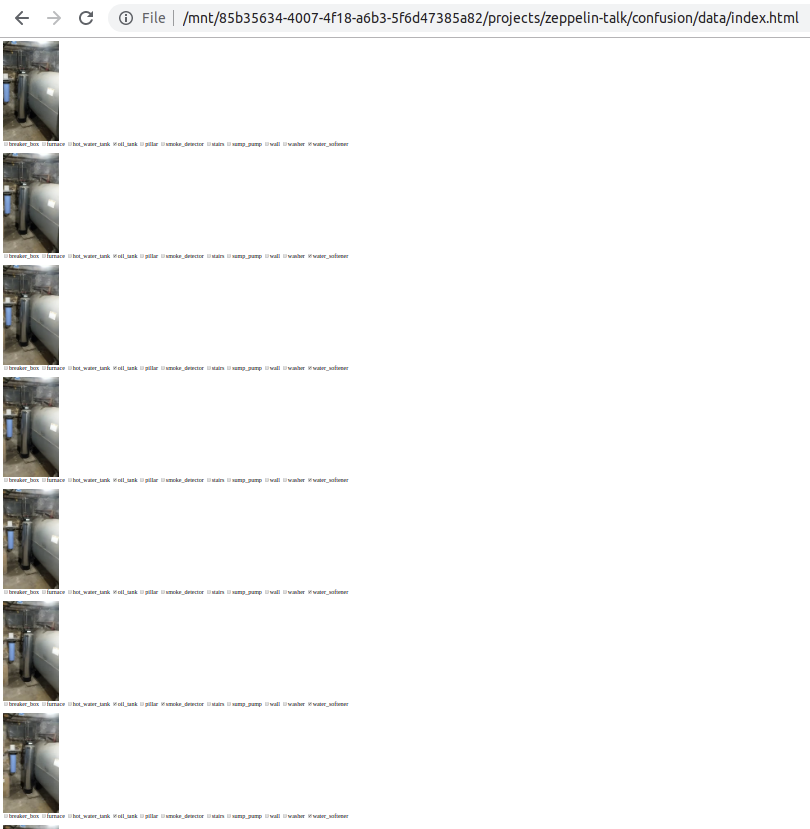

Apache Zeppelin
Gary Sieling
Element 84
@garysieling
gary.sieling@gmail.com


- Notebook Features
- Notebook Uses
- Machine Learning Demo
Why Zeppelin?
Language Conversion
Data visualizer
Data visualizer
Cloud + Spark integration
Jupyter
Zeppelin API
Environment setup
- Zeppelin Docker (Java / Jetty)
- Pre-installed python libraries (opencv, mxnet)
- Git Volume
- Data Volume
Identifying household objects
- I.e. a home inspector
- Reverse image search
- No good datasets
Infrastructure
- App to record videos
- Stock Videos stored on S3
- Pull videos to training machine
- Extract frames with ffmpeg
- Train with mxnet / gluon
ETL process
Decision Points
Why mxnet?
- AWS support
- Multi-language
- DeepLens
Image Sources
- Bing API
- Stock videos
- Idea: 3-D models?

Decisions
- Classification
- Object Detection
- Segmentation
When does this work?
- When people can see differences
- May only be advisory

Debugging
- Debug every step
- Ability to restart from a known point
Spot check tags
Dataset size
Processed Image Preview
Read a TSV file
TSV Visualization
Tag an image
Manual Validation (863 entries)
Augmentation with mxnet filters
Confusion Matrix

Reproduceability
- App to upload to S3
- Debugging at every step
- Dockerized Zeppelin for Python dependencies
- Upload output to S3
- Upload a testing notebook to S3
Lessons Learned
- Do some manual tagging (challenge data vs. real world problems)
- Hold out a validation set that matches the "business" problem
- Pre-trained models: ymmv
Challenges
- Tag taxonomy
- Rare / out of date objects
- Accessibility of sensors
- Non-existence of objects
- Video flicker